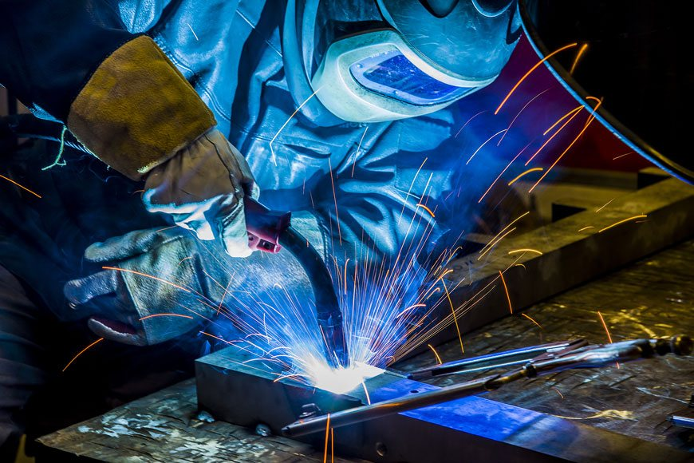

Aluminium Welding and Fabrication
MacWeld uses both the TIG and MIG processes for welding a large number or aluminium components, from small alloy covers and sumps right through to truck and trailer bodies.
We have a department that specializes in marine applications, repairing and fabricating a broad range or components on boats from skeg repairs right through to cracks in hulls, rocket launchers and new transoms.
We have 17 years experience in the welding and fabrication of various alloys and pride ourselves in being able to work with our customers to give a repair or new component that is in many cases better than the original.

Stainless Steel Welding and Fabrication
MacWeld can cater for all forms of stainless steel fabrication and stainless steel welding. We offer specialist expertise in design, manufacture and installation of stainless steel tanks, piping and equipment for the dairy, beverage and pharmaceutical industries.
With a workshop and mobile welding plants no job is too big or small for MacWeld, with our flexible and innovative approach to quality stainless steel fabrication we are leaders in our field
We pride ourselves on offering a service that has our customers coming back time after time.
MacWeld specializes in the ability to not only design but problem solve any current or on going issues.
Stainless steel fabrication and stainless steel welding is part of the company's core business with ongoing investment in plant, equipment and training to ensure our qualified team of tradesmen produce the quality required to meet the relevant standards for all our customers be it 4703 or asme 9.
We have over 10 years experience in the fabrication and welding of stainless steels and pride ourselves on being able to offer short lead times.